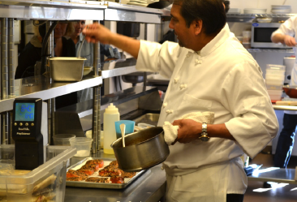

NEWS
- Local
- Sports
- Health
- Science
- Business
- National/World
- Politics
- Education
- Art
- Essays
- Blogs
LOCAL
- Calendar
- Classifieds
- Pasatimpo
- Real Estate
- Magazines
- National/World
- Obituaries
- Weather
GET CONNECTED
- Subscribe
- Contact
- About

close x
Local / Story
Chef Rios a finalist for James Beard Awards
Posted: Tuesday, March 28, 2017 12:00 am
The New Mexican
Santa Fe Chef Martín Rios is a finalist for the 2017 James Beard Awards in the Best Chef Southwest category.
"The judges have for this category alone, approximately 1,000 great chefs from which they can select only a very few," said Rios. "To be recognized by our peers in this way is a huge honor for our entire staff who work so hard every day to provide our guests the highest quality dining experience that they expect and deserve from a Santa Fe restaurant."
Restaurant Martín is the embodiment of a 20-year dream by Rios and his wife, Jennifer Rios. Martín Rios volunteers for Cooking with Kids and Jennifer Rios is president of The Horse Shelter.
Rios, a native of Guadalajara, Mexico, moved to Santa Fe when he was 14 and started in the restaurant business as a 17-year-old dishwasher. He eventually worked his way up to executive chef at several restaurants and received his formal training at the Culinary Institute of America. The James Beard Awards 2017 winners will be announced Monday, May 1 in Chicago..
Santa Fe chef Martín Rios began experimenting with the sous-vide technique when he opened Restaurant Martín in 2009. Now, he said, their chicken, pork, lamb cheeks, and eggs are all cooked sous vide.
Rios is committed to using the freshest seasonal ingredients for his "progressive American cuisine." In summer he even has his own garden outside his kitchen door. Sit on the patio and you may see him picking a few herbs for a garnish.